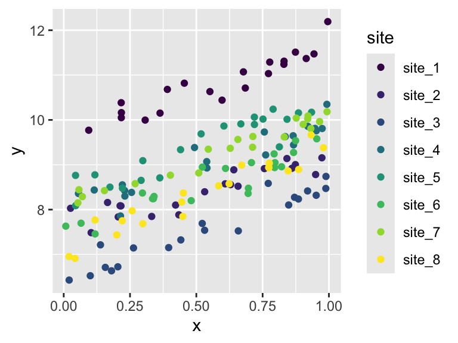

This lab will walk us through how to use the lme4 package to fit a mixed effects model.
You can download the lab template .qmd file for this lab here:
The template will prompt you to work through the following sections.
17.1 Using simulated data to understand fitting mixed effects models
Let’s start with some simulated data to both make sure we understand how mixed effects model work (and their assumptions) and how the lme4 package implements fitting mixed effects models.
First we simulate the data. Imagine we have some response variable y and some numeric explanatory variable x and we have collected data on these variables from 8 sites (think sampling locations across space) with 20 observations coming from each site.
# set-up the simulation# number of sites (will be rand effect)nsite <-8# number of (pseudo) reps per sitenrep <-20# sd of the random effect of sitesig_rand <-1# sd of the "residuals"sig_resid <-0.25# overall intercepta0 <-8# slopea1 <-2sim_dat <-data.frame(site =rep(paste0("site_", 1:nsite), each = nrep), # simulate random effect of site, we would never# actually have this in real datasite_rand =rep(rnorm(nsite, mean =0, sd = sig_rand), each = nrep),x =runif(nsite * nrep)) |># add the response variablemutate(y =rnorm(nsite * nrep, mean = a0 + site_rand + a1 * x, sd = sig_resid))head(sim_dat)
ggplot(sim_dat, aes(x, y, color = site)) +geom_point() +scale_color_viridis_d()

Figure 17.1
We can see that the random effect of site bumps the observations up or down but does not change the slope of y versus x. So the rand effect of site only impacts the intercept (more on that shortly).
This is indeed what we should expect because this is how we simulated the data, we said the mean of y is
a0 + site_rand + a1 * x
The site_rand enters this expression as an additional intercept term along with a0.
17.1.1 Introducing lme4 and the lmer function
Now we are going to try to use maximum likelihood to estimate the values of the parameters a0, a1, sig_rand, and sig_resid from the simulated data. We know the “true” values of those parameters, so we can evaluate whether the maximum likelihood method implemented in lmer worked.
Here is how to use the lmer function:
sim_mod <-lmer(y ~ x + (1| site), data = sim_dat, REML =FALSE)
Notice a few things:
The fixed effects part of the model is like what we’ve seen before: y ~ x
The way a random effect is implemented is through the notation (1 | site) which means “let there be an additional intercept term conditional on site”
We also had to specify REML = FALSE, this is because the default is REML = TRUE and that default actually does not maximize the likelihood function (what we want) but rather maximizes the “relative” or “residual” likelihood (what we don’t want)
Now we can look at the results
sim_mod
Linear mixed model fit by maximum likelihood ['lmerMod']
Formula: y ~ x + (1 | site)
Data: sim_dat
AIC BIC logLik -2*log(L) df.resid
43.1723 55.4730 -17.5862 35.1723 156
Random effects:
Groups Name Std.Dev.
site (Intercept) 0.8655
Residual 0.2347
Number of obs: 160, groups: site, 8
Fixed Effects:
(Intercept) x
7.835 2.022
The print-out should show us a standard deviation for random effect site that is close to 1 and a standard deviation for the residuals that is close to 0.25. If we want to directly access those values we can like this:
# extract the fixed effectsfixef(sim_mod)
(Intercept) x
7.834852 2.022116
# extract the standard deviations of random effectsVarCorr(sim_mod)
Groups Name Std.Dev.
site (Intercept) 0.86551
Residual 0.23475
Something interesting about the way mixed effects models are fit is that the algorithm actually infers the optimal values that should be sampled from the random effect to maximize the likelihood. We can see evidence of that by asking for the “coefficients” of the model
We see an intercept for each site. The fact that each site gets its own (randomly sampled) intercept is why this kind mixed effects model is call a “random intercepts” model.
17.2 Fitting a mixed effects model to real data
Now its your turn to take what we learned with simulated data and fit a random intercepts model to the real data. Let’s return to the model of trying to predict log DBH based on human impact and invasive status (with an interaction) but now we’ll include a random effect of survey plot. The fixed effects part of the model should be the same as before and look like this:
log_dbh_cm ~ Native_Status * hii
First load and clean the data as we have before:
tree <-read.csv("https://raw.githubusercontent.com/uhm-biostats/stat-mod/refs/heads/main/data/OpenNahele_Tree_Data.csv")hii_geo <-read.csv("https://raw.githubusercontent.com/uhm-biostats/stat-mod/refs/heads/main/data/hii_geo.csv")# merge the data into one data.frame, clean, add needed columnsdat <-left_join(tree, hii_geo) |># remove missing DBH valuesfilter(!is.na(DBH_cm)) |># add a column for log-transformed DBH since this will be # the variable we use as a response variablemutate(log_dbh_cm =log(DBH_cm)) |># remove NAs for elevationfilter(!is.na(hii)) |># remove "uncertain" for native statusfilter(Native_Status !="uncertain")